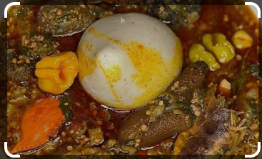

Sobolo

Details
Banku, a traditional Ghanaian staple, is crafted from fermented corn
and cassava dough, providing it with a unique texture and taste.
Ingredients
- For Okro Soup
- 1 medium-sized salmon
- 1 lb smoked turkey
- 1 pound okro
- 2 cloves garlic
- 3 medium tomatoes
- 1 large onion
- 1 tsp. grated ginger
- 2 chili peppers - scotch bonnets or other red chilis are
best, ground or finely chopped
- 3 garden eggs
- 1/2 cup mushrooms
- 1/2 cup palm oil
- 2 cubes of Bouillon cubes
- Salt to taste
- For Banku
- 2 cups of water
- 1 pound cassava dough
- 2 pounds corn dough
- Salt to taste
Steps
- Mix the 1 cup of water and cassava dough then pour the mixture through a sieve to ensure that all the unmilled pieces of cassava and any other residue are eliminated.
- Add the corn dough to the cassava dough.
- Add some salt and mix thoroughly until the mixture thins and becomes smooth.
- Put the pot over medium fire and continue to mix. The banku will become more difficult to stir, but continue to mix in order to ensure it does not become lumpy. Add about one cup of water and cover the pot for 5 minutes to allow the water to evaporate and cook the banku further. During this time, stir the banku intermittently.
- When the banku is ready, shape it into a small ball using a spoon. Alternatively, if you won't eat all of the banku at once, spoon out portions into small plastic bags and roll up the ends.
- Chop half of the pound of okra, then grate the other half. The smaller you cut the okra, the better the draw will be.
- Cut the stalks off the garden eggs and cut them in half
- Soak the garden eggs and the okra for 10 minutes before transferring them to a pot to boil until the garden eggs turn translucent. Remove from flame
- In a separate pot, pour 1/2 cup of palm oil. When the oil is hot, add the onion, ginger, bouillion cubes, ground chili pepper and garlic. (Optional: add some ground ginger). As the mixture softens, add tomato and mushrooms, and continue to let it simmer over the fire
- Allow the pot with the palm oil mixture to continue cooking for 2 to 3 minutes before adding the smoked turkey and fish. Once the turkey and fish are sufficiently cooked, add the okra mixture
- Add the okra into the mixture by turning it from the bottom of the pot to the top. Allow the mixture to cook for another 10 minutes. The okra is added last in order to avoid over-cooking it.
- Serve when ready alongside banku